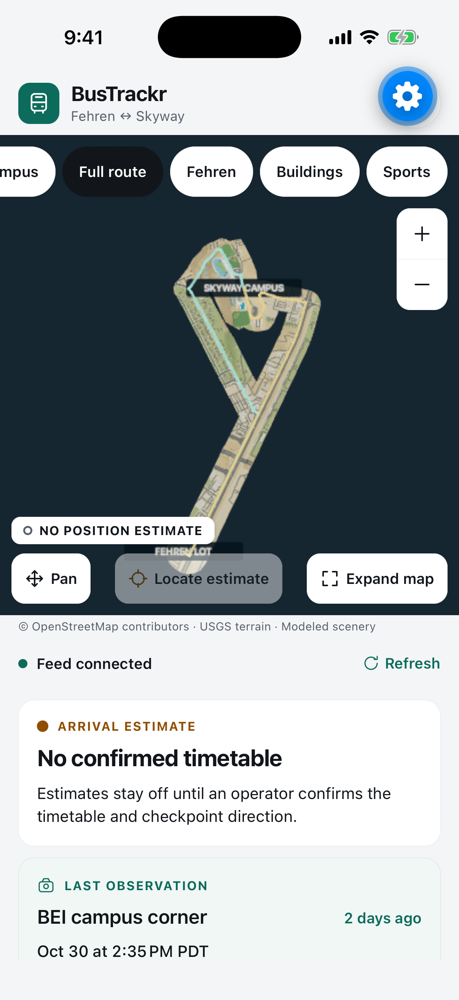
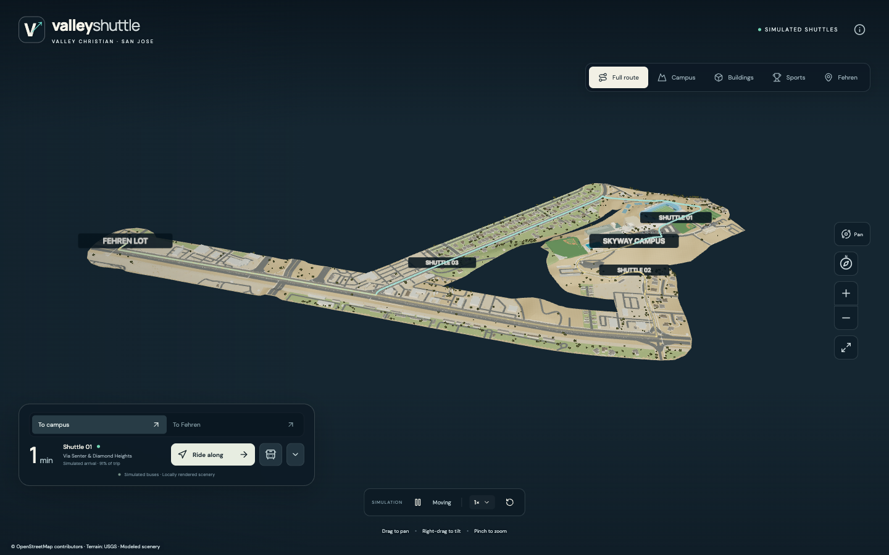
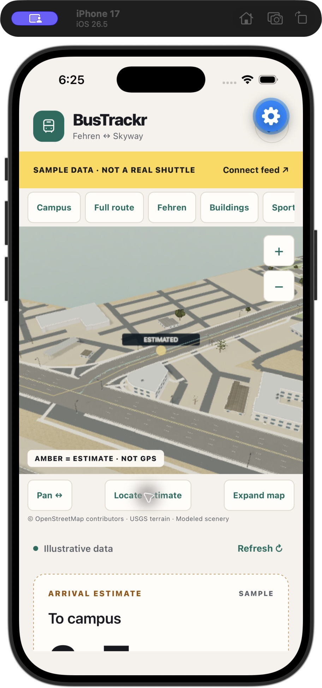
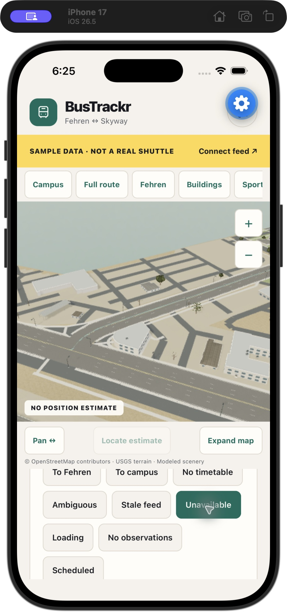

The iOS and Android apps are unreleased and not in any app store.
Skyway campus in the BusTrackr 3D scene. This is a modeled reconstruction, not a photograph. Cropped from the web app.
Feed status
Checking the live feed…
Status feed
Checking…
Last camera observation
Checking…
Camera emails saved
—
Arrival estimates
Checking…

The native app in Expo Go on an iPhone 17 Pro simulator, connected to the production feed on November 1, 2026. Cropped below the app header to remove Expo Go's developer button.
The app, on the real feed
This capture shows the honest state of things. The map fills the top of the screen, and the two cards below it say what's known.
Feed connectedThe status service is answering.
No confirmed timetableSo the app shows no arrival estimate, and Locate estimate is disabled.
BEI campus corner, 2 days agoA real camera alert from October 30, with the camera's own timestamp.
No position estimateThe map says so directly, so nobody reads the model as a live bus.
Three kinds of information, never blended
A sighting is a fact, an estimate is a guess, and the map is a model. The app labels each one so you can tell them apart.
Observed
Camera sightings
A camera at one checkpoint emails an alert when a bus enters its zone. BusTrackr shows the time the camera recorded, in Pacific time.
Email delivery time is never shown as camera time
A sighting doesn't identify the vehicle or its direction
A sighting doesn't prove the bus has left
Estimated
Arrival range and amber marker
When the server has a usable prediction, the app shows a range in minutes and an amber marker on the route.
Ranges are labelled heuristic, not calibrated
Estimates need a confirmed timetable, which doesn't exist yet
Responses older than 45 seconds remove the estimate
Modeled
The 3D scene
USGS elevation data and OpenStreetMap footprints become a 3D campus and route. The native app bundles all of it, so the map loads with no network.
No GPS tracking
No location permission
The packaged scene makes zero network requests
The whole route, in detail
Five camera views cover the route and the places you'd look for. Terrain, roads, roofs, playing fields and trees are all geometry you can move around in.

Full route. The Shuttle labels come from the web app's Scene demo, where bus positions are simulated.
Fehren. The lot at the far end of the route.
Buildings. The Conservatory's glass canopy and stone entry.
Sports. The yellow bus is a simulated Scene demo bus.
Campus, Full route, Fehren, Buildings, SportsOne tap moves the camera.
Pan or OrbitChoose what a one-finger drag does.
ZoomPinch, or use the plus and minus buttons.
Locate estimateCenters the amber marker. Disabled when there's no estimate.
Expand mapHides the cards until you choose Show details.
Reload 3D mapAppears if the renderer stops or takes over 60 seconds to load.
This is an independent reconstruction, not photogrammetry. Facades and small features are approximate, and route alignment, road widths and service access still need school confirmation.
No data means no estimate
When the data falls short, BusTrackr removes the number and tells you why. The map stays available either way.

Estimate available. Amber marker, labelled as not GPS.

Feed unavailable. Same view, no marker.
Both captures come from the iOS Simulator on October 26, 2026, using the app's sample data. The app's controls have been restyled since then.
What you see
What it means
No confirmed timetable
An operator hasn't confirmed the timetable and checkpoint direction. This is the production state today.
No clear run match
More than one run could match, so no arrival or vehicle position is shown.
No active run confirmed
A missing estimate doesn't mean the shuttle has arrived or been cancelled.
Waiting for the next run
The app shows the next timetable time, labelled as a schedule and not an observed arrival.
Waiting for fresh data
The last update is too old to use, so estimates are hidden until the feed refreshes.
Feed unavailable
The status service can't be reached. The app keeps the last sighting and hides estimates.
Sample data banner
A yellow banner marks illustrative data. It stays visible for as long as the sample is on screen.
Where things stand
BusTrackr is a working proof of concept. Here's what you can use today and what isn't ready.
Available
3D web app
Runs in a browser with no account. It has a camera mode and a Scene demo, where the buses and their arrival times are simulated and labelled that way.
Built with Expo and tested in the iOS Simulator. Android runtime and physical phones haven't been verified, and nothing has been submitted to either store. Developers can run it from source.
Real camera alerts reach the server through a signed email webhook. As of November 1, 2026, the feed holds one, from October 30. Arrival estimates stay off until there's a confirmed timetable.